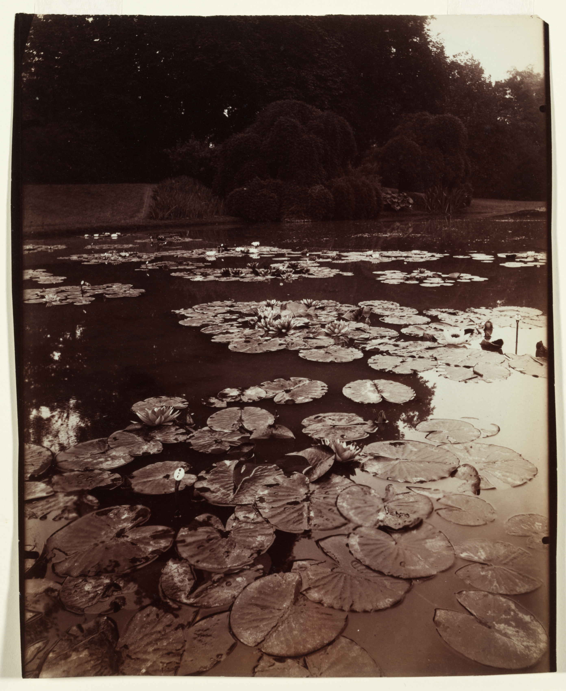

Eugène Atget
Atget photographed the streets, architecture and gardens of Paris and its surroundings. His attentive records make room for the overlooked: a quiet street, a formal garden, the surface of a pond.


A street before the city wakes. People held between departure and arrival. Light caught on the surface of water. Intervals brings photographs by Eugène Atget and Alfred Stieglitz into conversation.
Continue through the exhibition ↓

Atget photographed the streets, architecture and gardens of Paris and its surroundings. His attentive records make room for the overlooked: a quiet street, a formal garden, the surface of a pond.
Photographer and advocate for photography as art, Stieglitz explored modern life through the camera. In The Steerage, the structures of a ship and the people aboard become a study in separation and connection.
Enquire about the exhibition.